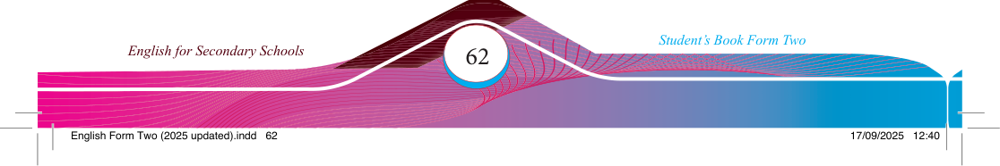
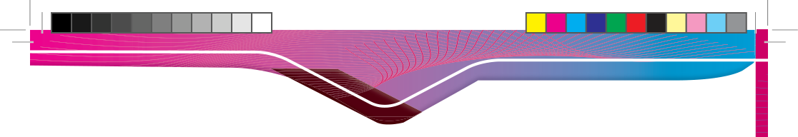

Questions
1. How does the story relate to your personal experiences or challenges?
2. Have you encountered a situation related to the one in the story? How did you deal with it?
3. How does the message or theme of the text connect to current global or local issues?
4. Can you link the story to any recent news or current events?
5. What is the main lesson of the text, and how can it be applied to your life?
6. How has the text infl uenced your perspective or inspired you to make changes?